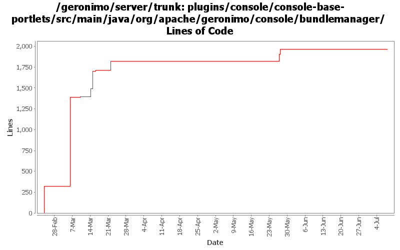

[root]/plugins/console/console-base-portlets/src/main/java/org/apache/geronimo/console/bundlemanager

| Author | Changes | Lines of Code | Lines per Change |
|---|---|---|---|
| Totals | 24 (100.0%) | 2329 (100.0%) | 97.0 |
| rwonly | 23 (95.8%) | 2010 (86.3%) | 87.3 |
| gawor | 1 (4.2%) | 319 (13.7%) | 319.0 |
GERONIMO-6054 Bundle null error happened when refresh an inactive bundle
1 lines of code changed in 1 file:
GERONIMO-5978 input nothing to list all packages
2 lines of code changed in 1 file:
GERONIMO-5978 show exporters and importers in one table
97 lines of code changed in 1 file:
GERONIMO-5978 View bundle packages in Geronimo admin console
142 lines of code changed in 1 file:
GERONIMO-5847 (GERONIMO-5871) add blueprint type support
114 lines of code changed in 4 files:
GERONIMO-5847 improve info/warning/error messages
25 lines of code changed in 1 file:
GERONIMO-5847 add refresh bundle functionality and some importing wired improvements
13 lines of code changed in 1 file:
GERONIMO-5847 add show services functionality
215 lines of code changed in 2 files:
GERONIMO-5847 add Show dynamic import packages and Show import packages from require bundle functionalities, and make the bundle perspective as default
126 lines of code changed in 1 file:
GERONIMO-5847 make the search case insensitive and add some static string variables
13 lines of code changed in 1 file:
GERONIMO-5847 Create pure html OSGi portlet
1262 lines of code changed in 9 files:
GERONIMO-5769: A separate portlet for displaying web application bundles
319 lines of code changed in 1 file: